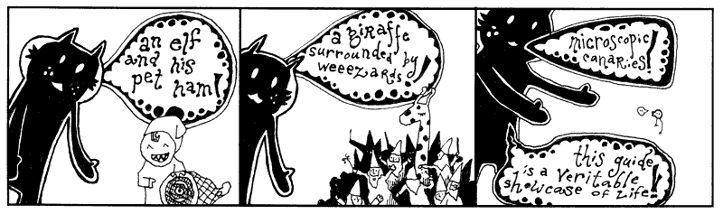

@timruffles
truffles.me.uk
all slides and code will be online
Responds to HTTP requests, often with HTML.
By:
Does what you'd think: 'serves up' something to the browser.
Handles listening for connections etc, then passes the requests on to our web app.
Normally handles requests for static files (images, CSS, JS, videos) without our web app.
Plain text file sent to client.
May trigger more requests for non-inlined resources
| http:// | www | .com | /search.html | ?q=foo | |
| protocol | subdomain | domain | tld | path | query string |
You want google, you ask for
http://www.guardian.co.uk/sports
You send
GET /sports HTTP/1.1
Host: www.guardian.co.uk/
You get
<html lang=en>
<meta charset=utf-8>
<title>Sport news, comment and results | Sport | The Guardian </title>
...Handed the HTTP request from browser by server.
Provides a response which the server serves up to the client.
GET /answer.html HTTP/1.1
Host: http://meaningoflife.comweb app code
if path == "/answer.html"
respond "<h1>42, obviously</h1>"
end
server gives the app code the
path
- "/answer.html" as a variable.
The app code reads the variables, and fires a
respond
function that passes a response to the server.
Response is then served up as:
HTTP/1.1 200 OK
Content-Type: text/html; charset=UTF-8
Content-Length: 42
<h1>42 is quite obviously the answer.</h1>
Two main types:
GET
retrieve something, search for something
POST
provide something to server, for changing state
GET
requests are triggered simply by requesting a URL via a link, or via JS
POST
requests are triggered via form with an
method=post
attribute, or via JS, sending data.
Web apps respond to HTTP requests.
They work hand-in-hand with a server, which passes it dynamic requests.
They interpret requests, gather data, and transform it into a response.
Our task: take HTTP data from client, and respond.
We're going to do that using Ruby.
You could also use Python, Javascript (node.js), PHP etc.
Ruby is a nice language made by Matz
"I hope to see Ruby help every programmer ... to enjoy programming, and to be happy"
It has a comic book by why the lucky stiff
description = "ruby is fun"
backwards = description.reverse
# this is a comment, the computer can't see us here
puts "printed backwards '#{backwards}'"
Outputs "printed backwards 'nuf si ybur'"
Store things in variables.
programming = "fun"You can copy, and overwrite them
programming_web_applications = programming programming = "super-fun"
if current_user == nil puts "<h1>logged out</h1>" end
get "/signup" do
if logged_in?()
redirect("/")
else
render("signup")
end
end
Functions are like black boxes you can reuse. You put things in & get things out.
def add(a,b) return a + b end add(5,10) # 15 add(-5,10) # 5
You pass in variables and values as arguments
def circumference(r)
Math.PI * 2 * r
end
radius = 5
circum = circumference(radius)
puts "the circle's circumference is #{circum}"
Inside our programs we keep data in data structures.
cats = ["tabby","persian","calico"]
hello = {
"fr" => "bonjour",
"en" => "hello",
"th" => "สวัสดี"
}
Array,
Hash
We just met the two you'll be using in Ruby -
Array
and
Hash.
Array
is just a list of things with an order. Days of the week, jobs in a queue etc.
Hash
map a key to a value, like a dictionary (you can also call them dictionaries).
You lookup items inside the structures in the same way -
[],
looks like a pigeon hole.
Arrays are only looked up by position:
cats[1]
is... "tabby" (array indexes (position) start from 0).
Hashes are looked up by key:
hello["fr"]
is "bonjour".
We don't have a variable for every bit of data in our system.
FB has 500 million users - they don't have a variable
user5000000000.
We store data in a database program. We send data to the database, and we can retrieve it later.
We'll be using a very simple database called Mongo.
Actually a fake version so you don't need to install.
Looks the same in the code so you'll be able to use Mongo yourself later!
Bob's browser sends us
GET /?name=bob HTTP/1.1in our program, we look up
db = FakeMongo::Connection.new
users = db["users"]
user = users.find({ "_id" => params["name"] })
respond("<h1>Hello #{user["name"]}, you like #{user["interests"]}</h1>")
Let's have a sneak preview of the web app we'll be creating:
user = users.insert("_id" => params["name"], "name" => params["name"])
Pretty simple hey? We're using the name as an id, and also storing it as
name
for consistency.
...is also very simple:
users.update(
{"_id" => params["name"]},
{"visits" => user["visits"] + 1}
)
We're using a fake version of a database called Mongo. It's free to download
We use databases to store data permanently, so we can retrieve it in our programs.
We
insert
data into the database,
find
it, and we can also
update
it.
Well done so far...
Sinatra is an open-source program for writing web applications. It looks like this
get "/" do return "<h1>You asked for the root path!</h1>" end
get "/" do return "<h1>You asked for the root path!</h1>" end
We've called a function for the HTTP verb 'get', which takes a route -
"/",
We write what looks like a function (actually a block - later) to tell it what to do in response.
If we return HTML, it is sent to the client.
Return HTML, browser will receive it
redirect("/")
redirects to the root path
Store client state between request
Client state - so logged in vs logged out, not user data
e.g: things that just happened in client - temporary messages
def login user session["user_id"] = user["_id"] end
Stores a reference to our logged in user's name
def current_user
users.find({"_id" => session["user_id"]})
end
def message(msg) session["message"] = msg end def woops(msg) session["woops"] = msg end
We call these functions to set a message to be displayed next request.
Simplest possible app - signup, login, logout.
Display list of users.
Demonstrates routing, redirects, sessions and database.
GET for resources
POST for actions
Optional: hidden inputs with
name=_method
to send DELETE and PUT requests
Get a host - runs your server for you.
Heroku is a great option - use git, updates when code changes.
Lots of other options for Ruby hosting - Google.
Why's poignant guide to ruby
Pickaxe Book - solid
Sinatra docs
Heroku - host w/easy deploy, database, admin
Git guide (drop box for code)
Ruby on Rails
Intro to SQL
Security OWASP - especially the top 10
Now build great things :)